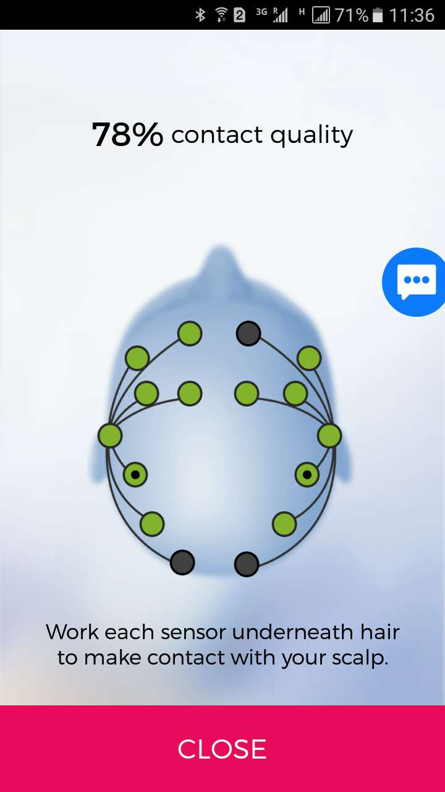
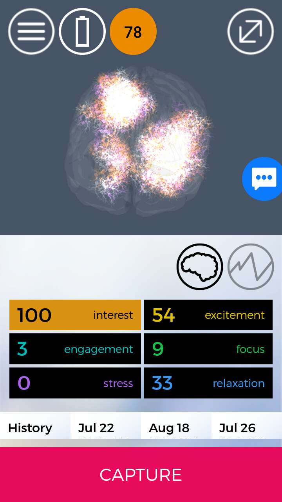

Reference： https://www.emotiv.com/myemotiv/
Test Platform: Android 6.0.1
*Not that sensitive, weak connection
*Can calculation emotion percentile (interest, excitement, engagement, focus, stress, relaxation) under different situations (break, memorizing, etc.)
*Display 3D brain sensibility, 2D line chart for different emotions.

Tests for EMOTIV Insight:
*Not sensitive, and easy to lose connection. It may blame girl¡¯s heavy hair. (Solved. Remove hair, and put references correctly)
*When speaking and memorizing (do something), response is much stronger.
Tests for EMOTIV EPOC+:
 
*Not that sensitive, weak connection
*Cannot well capture full emotion status for an action. (with only 78% contact)